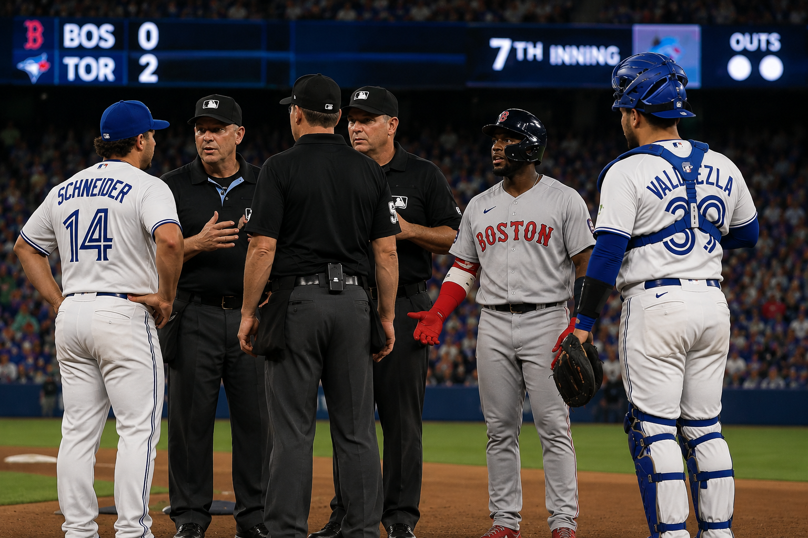
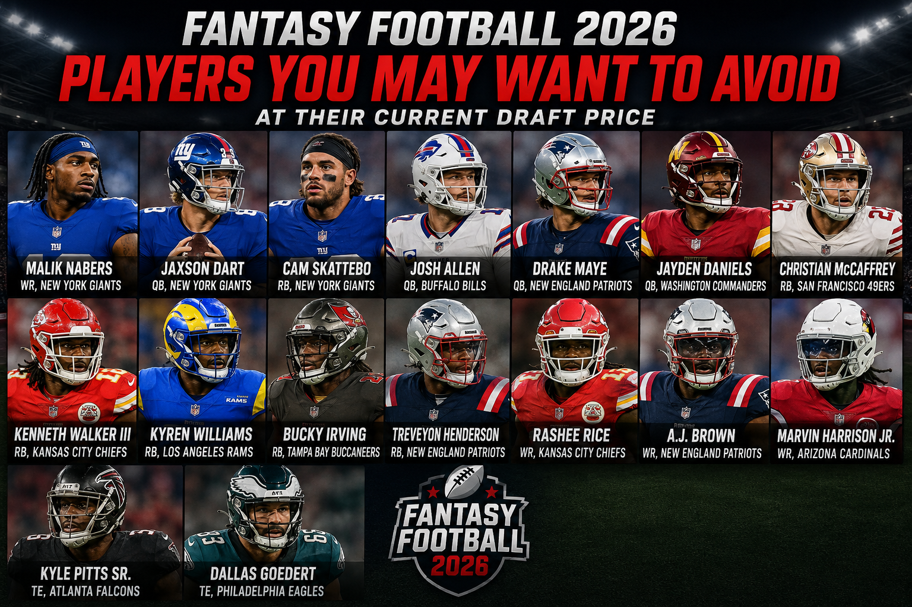

Bizarre Rules Confusion Causes 16-Minute Delay in Red Sox-Blue Jays Game
Published: Tuesday, August 11, 2026
A confusing sequence in the seventh inning caused a 16-minute delay during the Boston Red Sox’s 2-1 loss to the Toronto Blue Jays at Rogers Centre.
Read more
Phillies Hold Off Cardinals as Andrew Painter and Alan Rangel Rescue Depleted Bullpen
Published: Tuesday, August 11, 2026
The Philadelphia Phillies found a way to protect a narrow lead Monday night despite entering the game with a severely limited bullpen.
Read more

Fantasy Football 2026: Players You May Want to Avoid at Their Current Draft Price
Published: Monday, August 10, 2026
ESPN has released its latest fantasy football analysis identifying several players who could be overvalued in 2026 drafts. The list focuses on players whose current average draft position may not match their injury outlook, expected workload, consistency or overall risk...
Read more

The NBA Loses a Basketball Visionary: Don Nelson Dies at 86
Published: Sunday, August 9, 2026
The basketball world is mourning the loss of Don Nelson, one of the NBA's most accomplished coaches and most influential innovators. Nelson died Sunday at the age of 86...
Read more
Ne-Yo Hit With Lawsuit Over Alleged Dog Attack at Georgia Property
Published: Tuesday, August 11, 2026
Grammy-winning singer Ne-Yo is being sued by a woman who says she was injured after one of the entertainer’s dogs allegedly attacked her while she was making a delivery...
Read more
Tupac Shakur Murder Trial Begins Nearly 30 Years After Rapper's Death
Published: Monday, August 10, 2026
Nearly 30 years after Tupac Shakur was killed in Las Vegas, the case surrounding the legendary rapper's death is finally going before a jury...
Read more
Usher Laughs Off Viral Clone Rumors Following New Jersey Concert With Chris Brown
Published: Monday, August 10, 2026
Usher found himself at the center of an internet conspiracy after his performance with Chris Brown at MetLife Stadium, with some claiming he was replaced by a clone...
Read more
🇺🇸 National

19 Charged in Alleged $4 Million Pennsylvania Medicaid Fraud Scheme
Published: Tuesday, August 11, 2026
Federal and state authorities have announced criminal charges against 19 people and a Philadelphia-area home health care company accused of taking part in a scheme that allegedly generated more than $4 million in fraudulent Medicaid claims...
Read more

Tyler Boebert Faces New Charges in Colorado Investigation
Published: Tuesday, August 11, 2026
Tyler Boebert, the 21-year-old son of U.S. Rep. Lauren Boebert, has been arrested in Colorado over allegations involving a sexually explicit recording made in 2024.
Read more

Hobbs Names Former Mesa Republican Mayor John Giles as Running Mate
Published: Tuesday, August 11, 2026
Arizona Gov. Katie Hobbs is bringing a former Republican into her campaign for another term, selecting former Mesa Mayor John Giles as her choice for lieutenant governor.
Read more

Federal Investigation Leads to Seven Arrests in Alleged Las Vegas Fentanyl Network
Published: Monday, August 10, 2026
A federal investigation into suspected drug trafficking in Las Vegas has resulted in charges against seven people accused of operating a fentanyl distribution operation...
Read more

Powerful 7.4 Quake Rocks Colombia as Rescue Crews Search Collapsed Buildings
Published: Monday, August 10, 2026
A major earthquake struck western Colombia Monday, triggering building collapses, injuries and rescue operations as emergency crews searched for people who may be trapped beneath the rubble...
Read more

Las Vegas Domestic Disturbance Turns Deadly, Leaving Officer Injured and Two Dead
Published: Monday, August 10, 2026
A late-night domestic disturbance in southwest Las Vegas turned into a deadly confrontation, leaving a police officer injured and a juvenile girl and suspected gunman dead...
Read more
Puerto Rico Water Shortage Intensifies as Drought Leads to Service Interruptions
Published: Monday, August 10, 2026
Puerto Rico is dealing with increasing pressure on its freshwater supply as persistent dry weather forces officials to restrict water service in affected communities...
Read more
Investigation Underway After Mississippi Woman Is Found Dead Hanging From Tree
Published: Monday, August 10, 2026
Authorities are investigating the death of Tasia Fortune, a 29-year-old woman whose body was discovered hanging from a tree behind a vacant residence in Jackson, Mississippi...
Read more
Boat Captain Arrested After Fatal Capsizing Near Statue of Liberty
Published: Sunday, August 9, 2026
A boat captain has been arrested after a vessel overturned in New York Harbor near the Statue of Liberty, killing a 27-year-old woman and her 5-month-old daughter...
Read more
New York Man Charged After Deadly House Fire Leads to Homicide Investigation
Published: Sunday, August 9, 2026
A house fire in Orange County has turned into a homicide investigation after authorities discovered a man's body inside the residence, leading to the arrest of his 32-year-old son...
Read more